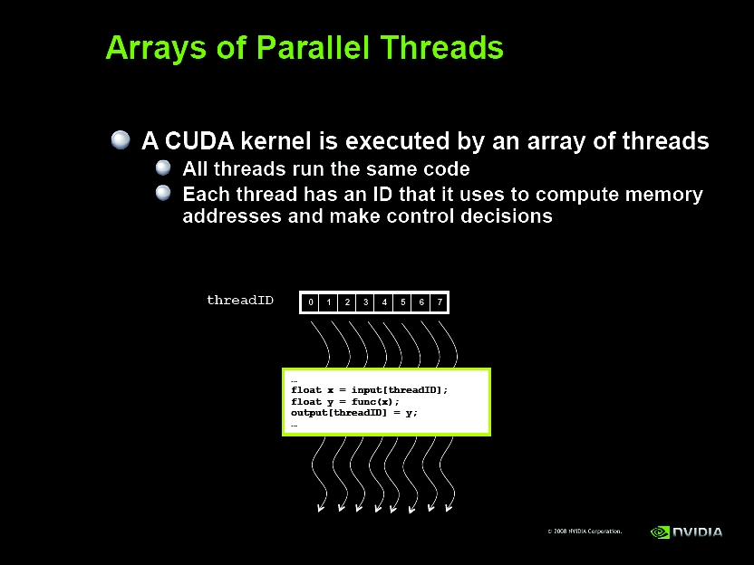
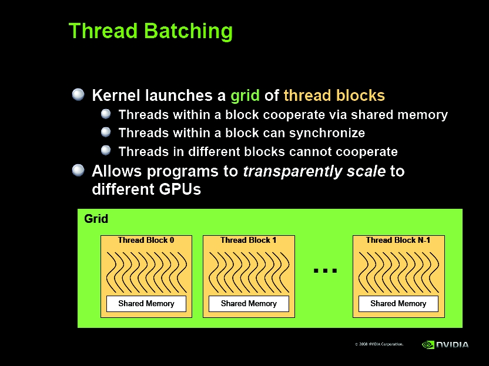
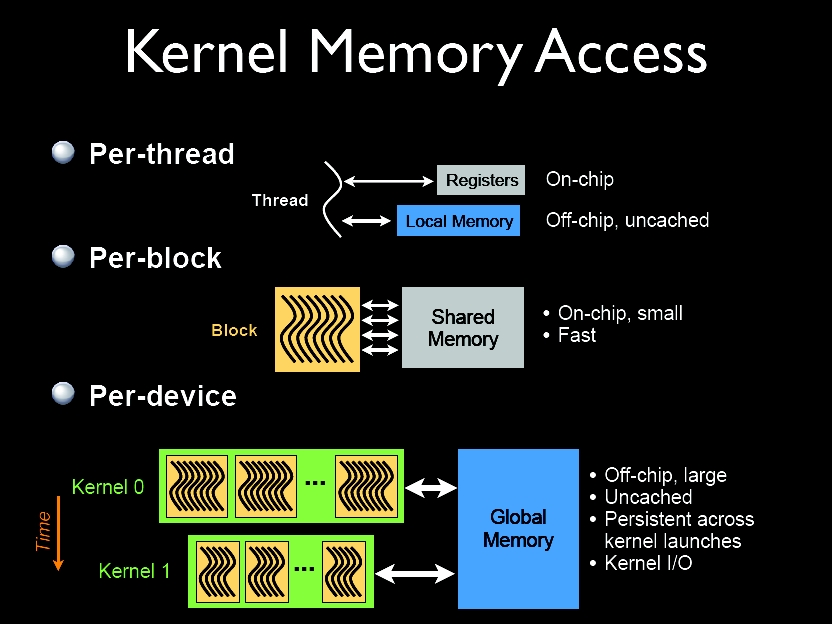
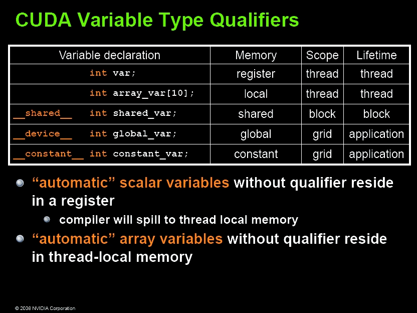
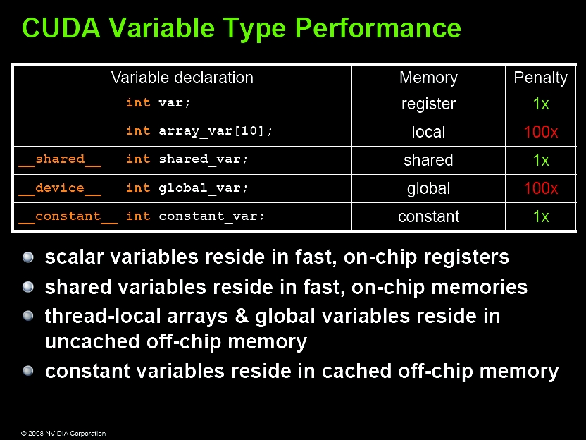
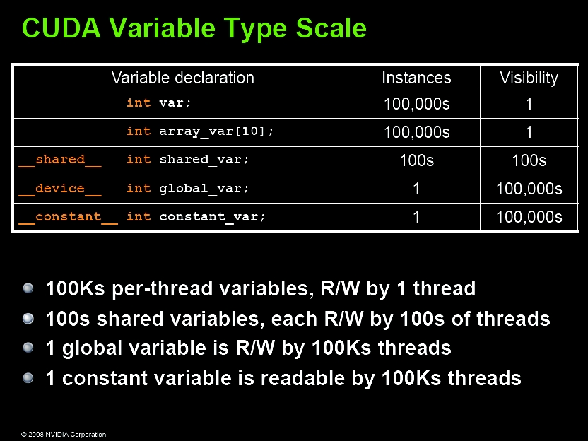
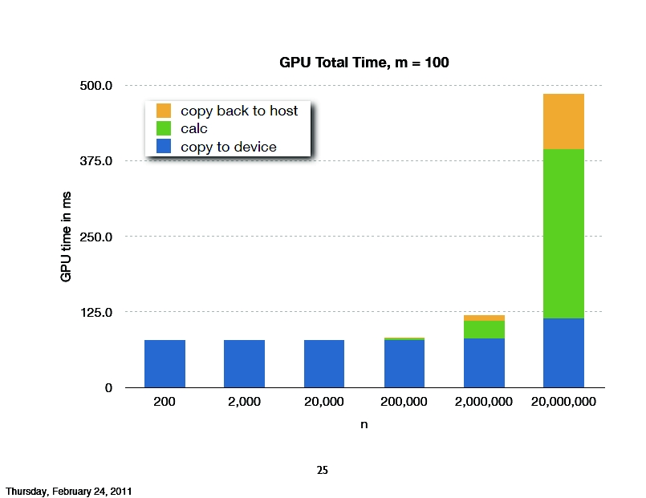

STA 250 Lecture 17
Advanced Statistical Computation
Paul D. Baines
Pearson and Lipschitz
To monitor GPU usage on Pearson and Lipshitz:
ssh username@pearson.ucdavis.edu nvidia-smi -l
ssh username@lipschitz.ucdavis.edu nvidia-smi -l
To see who else is logged on:
finger
Note:
- Those using
RCUDAshould uselipschitz - Those using
PyCUDAshould usepearson
Arrays of Threads

Thread Batching

The NVIDIA Compiler
CUDA code is compiled by the NVIDIA compiler nvcc, which functions
in much the same way as gcc and g++ for those familiar with C and
C++. Linking and header files require care (just as they do with
vanilla C/C++).
Example CUDA Program
My example, modified from some code on the NVIDIA forums:
See CUDA_example_01.cu
Compile with:
nvcc CUDA_example_01.cu # plain: makes a.out
nvcc CUDA_example_01.cu -use_fast_math -o CUDA_example_01.out
Run with:
./CUDA_example_01.out
Compiling Schematic

Kernel Memory Access

CUDA Variable Types

CUDA Variable Performance

CUDA Variable Scale

CUDA Performance Example

Credit: CS264 (N. Pinto)
Perspective on GPU's
What tasks are they good for?
- ☺ Numerical integration (nearly always)
- ☺ (Very) slow iteration MCMC (use within-iteration parallelism)
- ☺ "Simple" bootstraps
- ☺ Particle Filtering (Sequential Monte Carlo)
- ☺ (Extremely difficult) brute force optimization
- ☺ Large matrix calculations (with sufficient expertise)
- ☺ Single-use applications
Perspective on GPU's
What tasks are they not good for?
- ☹ Fast iteration MCMC
- ☹ "Difficult" bootstraps
- ☹ (Many) optimization problems
- ☹ Methodological work (portable code) [may change]
- ☹ Any problem that is not worth the additional effort...
Resources
- http://www.nvidia.com/object/cuda_home_new.html
- http://developer.nvidia.com/cuda-downloads
- http://developer.nvidia.com/nvidia-gpu-computing-documentation
- http://developer.nvidia.com/cuda-training#2
- http://developer.nvidia.com/getting-started-parallel-computing
- http://docs.nvidia.com/cuda/ CUDA Documentation
- http://docs.nvidia.com/cuda/cublas/ CUBLAS Documentation
- http://www.nvidia.com/content/cudazone/download/Advanced_CUDA_Training_NVISION08.pdf Advanced CUDA Slides (NVIDIA)
- http://people.maths.ox.ac.uk/gilesm/cuda/lecs/lecs.pdf Mike Giles' CUDA Slides
Getting started:
- Find a CUDA-enabled computer and install CUDA first!
- For those without an NVIDIA GPU, use Pearson + Gauss
- NVIDIA GPU Computing SDK has lots of (rich) examples
- Work through lecture examples, try to modify
- See lecture links on course website for more examples
GPU-accelerated Libraries
- Thrust (C++ STL-type library)
- CULA (CUDA implementation of LAPACK and BLAS, dense & sparse by Photonics)
- cuBLAS (CUDA implementation of BLAS by NVIDIA)
- cuSPARSE (CUDA implementation for sparse matrices by NVIDIA)
- cuRAND (CUDA random number generation by NVIDIA)
- CUDA Math Library (by NVIDIA)
Other Interfaces to GPUs
- PyCUDA :: http://documen.tician.de/pycuda/
- PyOpenCL :: http://documen.tician.de/pyopencl/
- RCUDA :: https://github.com/duncantl/RCUDA
RCUDA
RCUDA provides full bindings to the NVIDIA CUDA API for R users i.e., it provides
a mechanism to call any function within the CUDA API from within R. In addition to this,
it also provides higher level functionality that can hide some of the memory
management associated with CUDA.
- Kernels still need to be written in CUDA C.
- Kernels are compiled to
ptxcode usingnvcc --ptx - Kernels are loaded via modules into R
RCUDA
See demo code and examples...
That is enough for today... :)
Source. Wed: More GPUs.*
{kind=link}